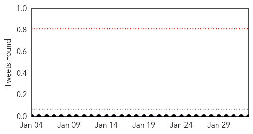
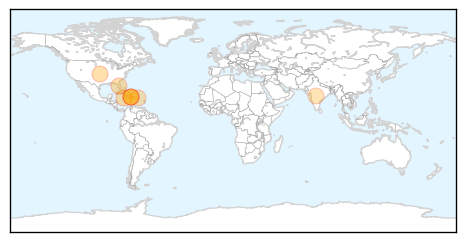
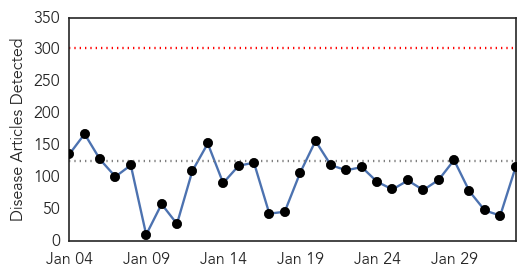
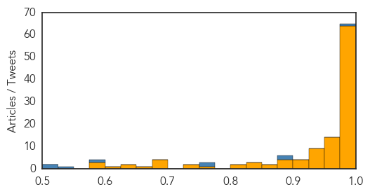

Chikungunya
30-Day Web Trend
2 alerts, 0 warnings

30-Day Twitter Trend
0 alerts, 0 warnings

Article Locations
Article Confidences

Top Articles:
- 0.995
- Virus or Arthritis? Diagnosis Not Always Clear
- 0.993
- Chikungunya Virus Infection Symptoms May Be Similar to Rheumatoid Arthritis
- 0.988
- Canadian health authorities issue Chikungunya travel warning
- 0.983
- Chikungunya Virus Shows Similar Symptoms To Rheumatoid Arthritis, May Cause Misdiagnosis
- 0.970
- Chikungunya Could Mimic Rheumatoid Arthritis Symptoms, Leading To False Diagnosis
- 0.962
- Chikungunya may be misdiagnosed as rheumatoid arthritis, researchers say
- 0.928
- Eleventh Case Of Imported Chikungunya Virus Confirmed In Dallas Co. « CBS Dallas
- 0.870
- Symptoms and Blood Test Results can be Similar for Chikungunya virus and rheumatoid arthritis
Top Tweets:
-
No tweets found for Feb 02, 2015
Ebola
30-Day Web Trend
0 alerts, 0 warnings

30-Day Twitter Trend
2 alerts, 0 warnings

Article Locations

Article Confidences
Top Articles:
- 1.000
- Ebola virus: Second military health care worker flown back following needle accident with patient
- 1.000
- Nigerian Writer Turns The Tables On Ebola-Fearing America, Suggests Africa Screen Americans For Measles
- 1.000
- Second British Health Care Worker Moved to UK for Ebola Assessment
- 1.000
- Ebola virus death toll in West Africa nearing 9,000 — WHO
- 0.999
- Human Trials for Two New Ebola Vaccines Just Began in Liberia
- 0.999
- Ebola vaccines testing starts in Liberia in partnership between Liberian and US governments
- 0.999
- The world is closer to having a real weapon to fight Ebola
- 0.999
- Ebola vaccine trial gets under way
- 0.999
- Unhappy doctors; predict your next ER visit
- 0.999
- New Ebola scare as second military healthcare worker is flown back to England
- 0.999
- Worst Ebola outbreak in history: What you need to know
- 0.999
- Volunteers start getting Ebola vaccine in Liberia
- 0.999
- Senegal Puts 20 People on Watch for Ebola After First Case
- 0.999
- Tests Confirm Hospitalized Russian Aid Worker Not Infected With Ebola
- 0.999
- First Major Vaccine Trials In Liberia
- 0.998
- Liberia begins clinical trial for Ebola vaccines as outbreak ebbs
- 0.998
- CDC recommends looser Ebola monitoring than state quarantines for health workers
- 0.998
- Second healthcare worker brought back to England to be monitored for Ebola
- 0.998
- Ebola vaccine trial launches in Liberia
- 0.998
- The Courier Ebola vaccines trial starts in Liberia
- 0.998
- Liberia to Begin First Mass Trial of Preventive Ebola Vaccine
- 0.998
- Ebola Vaccine Trials Begin in Liberia
- 0.997
- Liberia begins clinical trial for Ebola vaccines as outbreak ebbs
- 0.997
- Liberia begins clinical trial for Ebola vaccines
- 0.997
- Liberia begins clinical trial for Ebola vaccines as outbreak ebbs
- 0.996
- Ebola vaccine trials to be carried out in Uganda
- 0.996
- Liberia Schools postponed for 2 weeks more -
- 0.996
- Liberia begins clinical trial for Ebola vaccines as outbreak ebbs
- 0.995
- Peter Penfold: Rebuilding Sierra Leone after Ebola
- 0.994
- Ebola victim still not free of virus
- 0.994
- Ebola fight enters new phase with vaccine trials in Africa (+video)
- 0.994
- Anti-Ebola vaccine trials to begin in Liberia
- 0.993
- Nurse is flown to UK in Ebola scare
- 0.992
- Malaria: The other epidemic in Sierra Leone
- 0.992
- First large-scale anit-ebola vaccine trials to begin
- 0.990
- Ebola Vaccines Trial Begins in Liberia
- 0.990
- Ebola Vaccines Trial Begins in Liberia
- 0.990
- Ebola Vaccines Trial Begins in Liberia
- 0.989
- Ebola crisis: Liberia bounces back
- 0.988
- African Union criticized Over Poor Record in the Early Stages of Ebola Epidemic
- 0.988
- Ebola Virus Remedy: Faces of Liberia’s Vaccine Trials
- 0.988
- Updated Information Re: Potential Implications for Travel Because of Ebola in Parts of West Africa, Feb. 2, 2015
- 0.987
- 'Ebola vaccine is safe'
- 0.987
- UK military experts warn of ‘weaponized Ebola’ – report — RT UK
- 0.986
- Ebola vaccine trial on volunteers begins in Liberia
- 0.986
- Ebola vaccine trial begins in secret location in Liberia
- 0.986
- Ebola vaccines testing starts in Liberia
- 0.985
- Ebola vaccines testing starts in Liberia in partnership between Liberian and US governments
- 0.985
- Ebola vaccines testing starts in Liberia
- 0.985
- Ebola crisis: First large-scale vaccine trials to begin
Showing top 50 articles...
Top Tweets:
- 0.984
- Ebola takes a toll on West Africa's surgeons as 800 health care personnel have been infected w/ virus http://t.co/MUQd7sg5fQ
- 0.980
- L'essaie de vaccin ebola a grane echelle au Liberia (radio, en anglais): https://t.co/an4oemkQVe …
- 0.955
- Ebola quarantine coming to Fort Monmouth - Asbury Park Press http://t.co/ySsMU970n7 ebola EVD
- 0.955
- Ebola crisis: First major vaccine trials in Liberia - BBC News http://t.co/LxyKAonGjX ebola EVD
- 0.925
- Serais sur BBCAfrique Londres Matin Mardi sur le test vaccin a grande échelle contre ebola. Excusez svp les fautes en grammaire français!
- 0.892
- RT: Ebola survivors are playing a huge role in stopping the spread of the disease. Read Mariatu's story http://t.co/eP7CfG1bCs Eb…
- 0.886
- Ebola virus epidemic: global picture and impact on children unicef http://t.co/E9xG7dds5e
- 0.880
- On the frontline with Ebola quarantine workers in Sierra Leone - http://t.co/9p21lL3jDe http://t.co/qljdyc7gvG ebola EVD
- 0.852
- The Brief — But Busy — Reign of the Ebola Czar - New York Magazine http://t.co/EyRUgiTyNw ebola EVD
- 0.852
- The Brief — But Busy — Reign of the Ebola Czar - New York Magazine http://t.co/7YRW1PFnoo ebola EVD
- 0.845
- Ebola Drug Trial Is Halted for Lack of Patients - New York Times http://t.co/GrSKTfevaB ebola EVD
- 0.825
- As Ebola Ebbs in Africa, Focus Turns From Death to Life - New York Times http://t.co/yc8HlNRGgv ebola EVD
- 0.812
- Tiny biotech says it may have an answer for Ebola - MarketWatch http://t.co/O8BInjaO1h ebola EVD
- 0.796
- Today's news pouch on avianflu avianinfluenza Ebola EbolaResponse MERS birdflu http://t.co/cHN7YxfxEj
- 0.795
- Ebola, Measles And Chris Christie's Inconsistent Healthcare Beliefs - Forbes http://t.co/RvHYlBuMws ebola EVD
- 0.780
- UK government feared terrorists would weaponise Ebola - The Guardian http://t.co/l541oJWGvK ebola EVD
- 0.746
- A Model of the 2014 Ebola Epidemic in West Africa with ContactTracing http://t.co/M5JIlXvf60
- 0.716
- Official death toll for the West African Ebola outbreak stands at 8,921, new figures from show. Unbelievable. http://t.co/Le36VTdk0K
- 0.683
- WATCH - When a survivor set fire to dismantled bits of ebola treatment centre in Liberia he said "Bye Bye Ebola": http://t.co/8H5tC6HpIn
- 0.683
- How Bad Data Fed the Ebola Epidemic | @NYTimes http://t.co/9M4qm27lkA
- 0.672
- RT: We are working with JDJ pediatric and maternity hospital in Monrovia for safe non Ebola health care http://t.co/9EIRZa2vh0
- 0.634
- Ebola-exposed travelers to be quarantined at Fort Monmouth, officials say - http://t.co/JIzTQ1apsN http://t.co/gwZ3tPDqGL ebola EVD
- 0.618
- Un symbole de l'espoir contre l'ebola au Liberia (Video, en anglais mais avec images!) http://t.co/RPeTRvq85Y … http://t.co/jhaCiHH581
- 0.595
- UK has flown home a healthcare worker who may have been exposed to Ebola in SL. 2nd such case in several days, both needlestick events 1/2
- 0.589
- Ebola heroes who saved UK nurse Pauline Cafferkey - http://t.co/9p21lL3jDe http://t.co/RS21nySPps ebola EVD
- 0.541
- Les essaiscliniques : pourquoi, pour qui, comment ? vaccins ebola http://t.co/rrhCoS1qR5
- 0.525
- RT: SierraLeone recorded 68 new confirmed Ebola cases last week. That would have been a daily average in November.... http:/…
- 0.523
- Evaluating large-scale bloodtransfusion therapy for the current Ebola epidemic in Liberia http://t.co/aEZcarj1ON
- 0.518
- Projected Treatment Capacity Needs in SierraLeone ebola PLOSCurrentsOut http://t.co/lV7qSe1vSr
- 0.518
- Liberia. Ebola Drug Trial Is Halted for Lack of Patients http://t.co/0YlXy7KnVE
- 0.517
- RT: Preparedness is an expensive business. @Eboladeeply asks if Guinea-Bissau could deal with an Ebola outbreak. http://t…